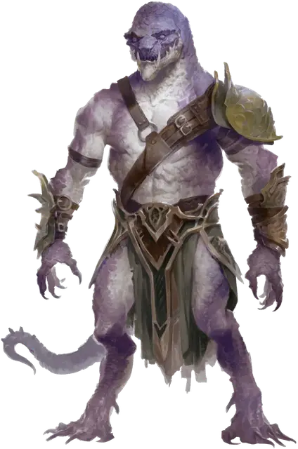

Драконид манипулятор
Draconian Mastermind
Средний Монстр, любое мировоззрение

Класс Доспеха 17 (природный доспех)
Хиты 67 (9к8 + 27)
Скорость 35 футов
| мод | спас | ||
|---|---|---|---|
| СИЛ | 13 | +1 | +1 |
| ЛОВ | 14 | +2 | +2 |
| ТЕЛ | 16 | +3 | +3 |
| мод | спас | ||
|---|---|---|---|
| ИНТ | 15 | +2 | +5 |
| МДР | 11 | +0 | +3 |
| ХАР | 17 | +3 | +6 |
Навыки Восприятие +3
Иммунитет к состояниям очарование
Чувства истинное зрение 60 футов, пассивное Восприятие 13
Языки Общий, Драконий
Опасность 6 (2300 опыта)
Бонус мастерства +3
Особенности
Предсмертные муки. Когда хиты драконида уменьшаются до 0, его магическая сущность вырывается в виде шаровой молнии кидаясь в ближайшее существо в радиусе 30 фт. от него, а затем по дуге распространяется на двух других существ в радиусе 15 фт. от первого. Каждое существо должно совершить спасбросок Ловкости Сл 14. При провале существо получает 9 (2к8) урона электричеством и становится ошеломлённым до конца своего следующего хода. При успехе существо получает половину урона и не ошеломляется.
Действия
Мультиатака. Драконид совершает три атаки Разрыванием или Энергетическим лучом.
Разрывание. . Рукопашная атака оружием: +5 к попаданию, досягаемость 5 фт., одна цель. Попадание: 5 (1к6+2) рубящего урона.
Энергетический луч. Дальнобойная атака заклинанием: +6 к попаданию, дистанция 60 фт., одна цель. Попадание: 8 (1к10+3) урона силовым полем.
Использование заклинаний. Драконид накладывает одно из следующих заклинаний, не требующее материальных компонентов и использующее Харизму в качестве базовой характеристики (Сл спасброска от заклинаний 14):
• Неограничено: невидимость [invisibility], волшебная рука [mage hand];
• 2/день каждое: переносящая дверь [dimension door], маскировка [disguise self], послание [sending].
Ядовитое дыхание (перезарядка 5-6). Драконид выдыхает 15-футовый конус ядовитого газа. Все существа в этой области должны совершить спасбросок Телосложения Сл 14. При провале существо получает 21 (6к6) урона ядом и получает 1 уровень истощения. При успехе существо получает половину урона, не истощается и в течение 24 часов невосприимчиво к ядовитому дыханию всех драконидов.
Реакции
Магический щит (3 р/день). Когда по дракониду попадает атака, он может создать невидимый барьер магической силы вокруг себя, предоставляя себе бонус +5 к КД против атаки вызвавшей его срабатывание.
Описание
Самые редкие и самые могущественные из драконидов — манипуляторы — заклинатели и стратеги, которые чаще всего служат военачальниками или советниками тех, кто их создал. Они появляются из золотых, красных или аметистовых драконьих яиц, бескрылые, но обладающие арсеналом жуткой силы. Как и у их предков-драконов, у манипуляторов есть оружие дыхание — исходящее облаком ядовитого газа. У них также есть грозные когти и зубы, которыми они разрывают врагов в ближнем бою..
Умирающие дракониды манипуляторы — это зрелище, на которое стоит посмотреть, поскольку их магическая сущность сливается в шар молнии, который дугой устремляется на тех, кто находится поблизости.
В мире Кринн дракониды манипуляторы, сформированные из золотых драконьих яиц, называются драконидами Аурака.
Дракониды - двуногие монстры, рожденные из драконьих яиц, которые были испорчены или искажены могущественной магией. Чаще всего эта развращение является преднамеренным актом, работой честолюбивого тирана, стремящегося превратить украденные яйца в драконидскую армию. Одно испорченное яйцо дает несколько драконидов одного и того же вида. На первый взгляд драконида можно принять за драконорожденного, хотя у большинства видов драконидов есть крылья.
Когда дракониды умирают, они не уходят тихо. Вместо этого их безжизненные тела высвобождают последний акт магического неистовства.